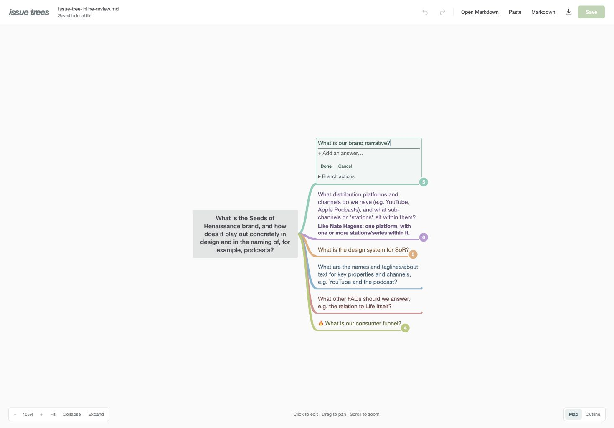

A close Coggle visual direction: compact labels, flowing pastel branches, and a small central question. Markdown remains the document; the map becomes a place to work.

Colour distinguishes branch families. Darker text carries the same family tone. Curves taper with depth and continue beneath labels.
Helvetica Neue / Arial. Root 14px; questions 13px; bold answers 12px. Content determines width, capped at 240px.
Select a question or answer and edit directly on its branch. Enter finishes, Escape cancels, and Save writes Markdown. Undo works across structural edits and saves. A changed source file stops a save rather than being silently overwritten.
Compactness must not erase context: keep every branch flowing right and edit text in its own node. Long answers expand independently. Mobile starts in an outline.
Review exposed draft loss on rejected edits and a race during saves. Preserve invalid drafts and lock mutations until saves finish. Final independent review: no remaining blockers.